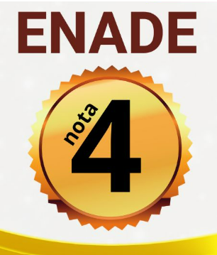
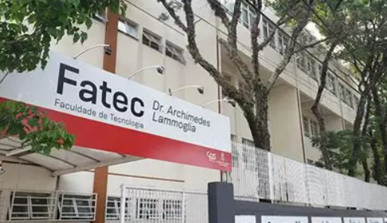

A FATEC (Faculdade de Tecnologia) é referência em ensino superior tecnológico gratuito no Brasil.
| Nota 4 no ENADE - Parabéns FATEC!! |
Curiosidade
A Faculdade de Tecnologia (Fatec) é uma instituição pública de ensino superior presente em 67 cidades do estado de São Paulo, oferecendo 81 cursos de graduação. O vestibular para a Fatec voltou a ser presencial a partir da edição 2022/2, e a instituição é conhecida por sua abordagem prática e voltada para o mercado de trabalho.
Fatec Indaiatuba - Faculdade de Tecnologia - Dr. Arquimedes Lammoglia